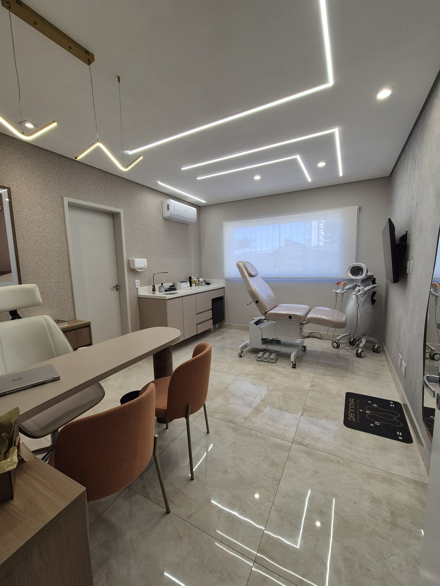
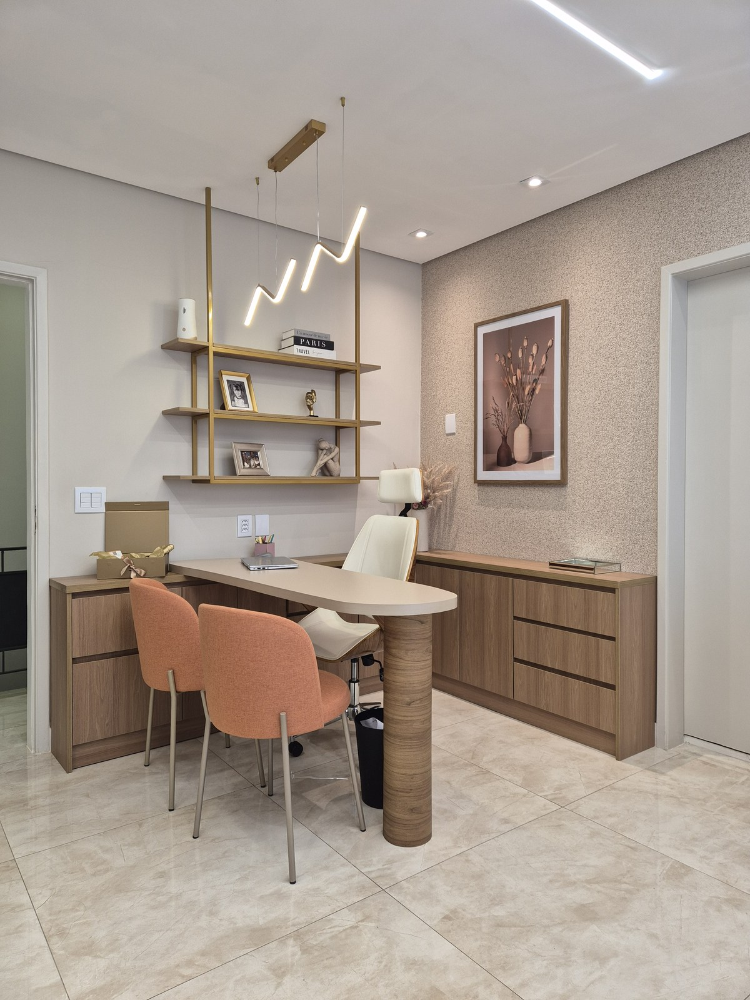
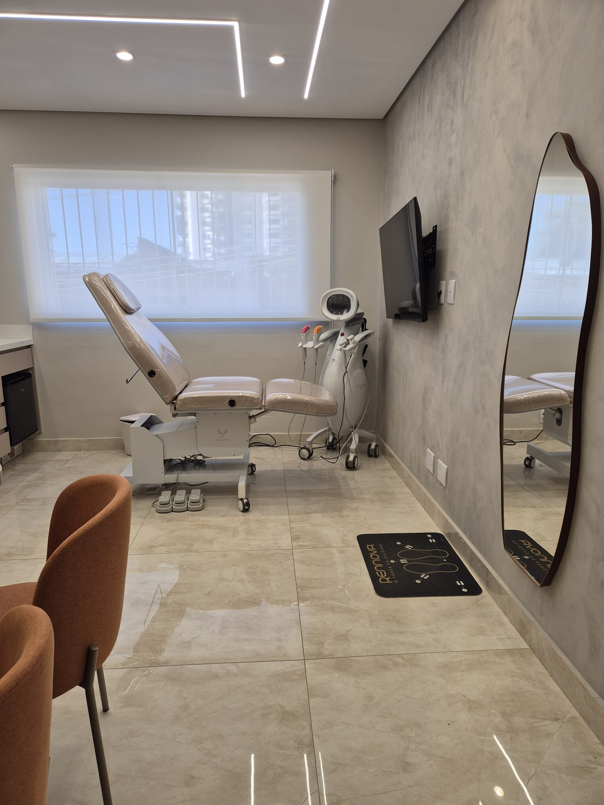
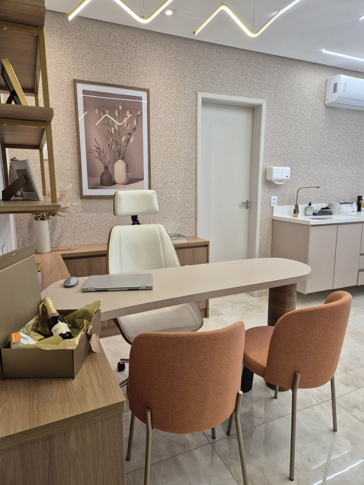
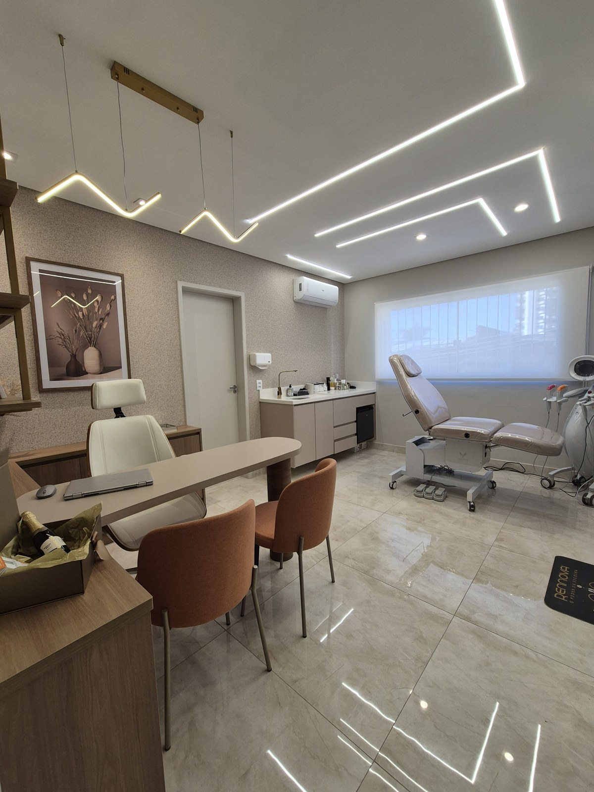
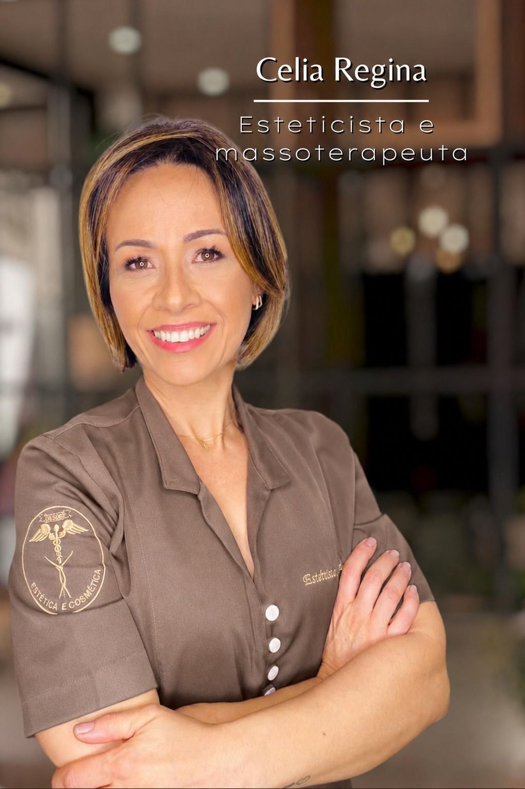
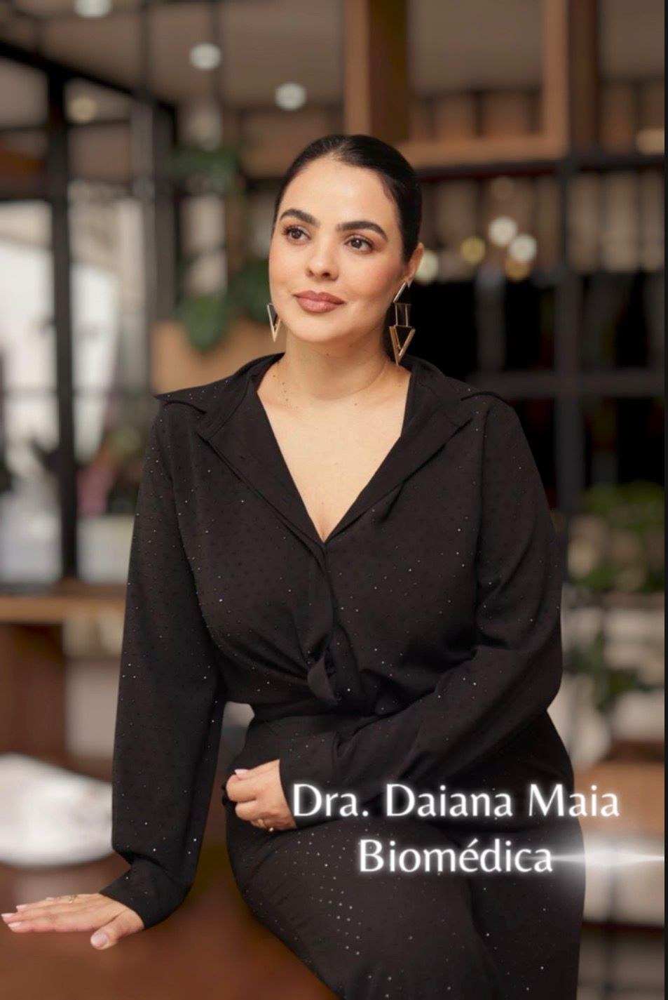
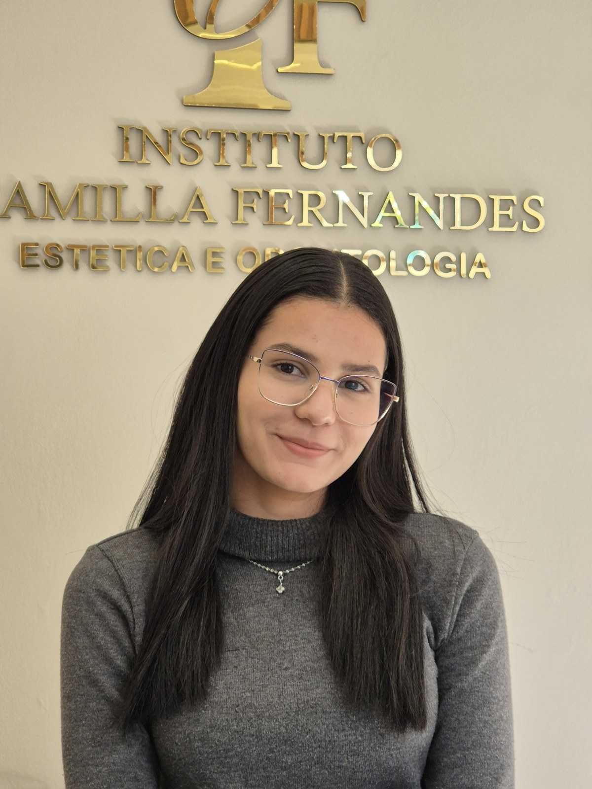
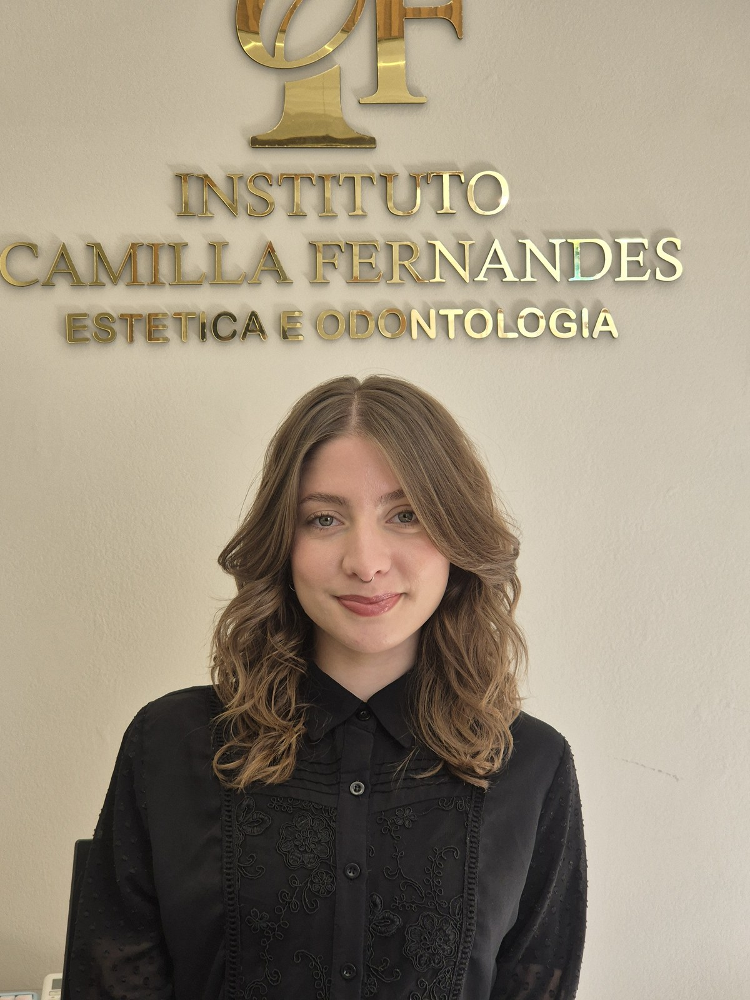

Envelhecimento facial: o que a ciência mostra
Os mecanismos do envelhecimento da face e por que o planejamento individualizado supera fórmulas prontas.
Há dezoito anos, cada decisão clínica neste Instituto nasce de uma avaliação individualizada. O ponto de partida nunca é o procedimento. É a pessoa.
Atendimento reservado e acolhedor, no Jardim Anália Franco, em São Paulo.





“O melhor resultado é aquele que ninguém percebe como procedimento. Percebem você, descansada, presente, em harmonia com a própria imagem.”
Princípio clínico do InstitutoNenhuma indicação acontece sem diagnóstico. A avaliação presencial é onde compreendemos sua anatomia, sua história e suas expectativas, e onde dizemos, com a mesma tranquilidade, o que fazer e o que não fazer.
Planejamento conservador, respeito às proporções do rosto e contenção técnica orientam cada escolha. O objetivo é que o resultado pareça seu, não um procedimento.
Atendimento individualizado, agenda reservada e acompanhamento próximo em todas as etapas. O cuidado não termina quando o procedimento termina.
“Dra. Camilla é uma excelente profissional. Espaço de atendimento muito acolhedor e aconchegante. Amando meus resultados dos tratamentos.”
“Experiência maravilhosa. A Dra. Camilla, muito competente e dedicada, me passou toda a segurança para realizar o tratamento com o coração em paz.”
“Dra. Camilla é muito profissional, cuidadosa e transmite muita segurança para o procedimento estético. Fiquei muito satisfeita com o resultado.”
No blog, a Dra. Camilla reúne artigos científicos, dicas de saúde e bem-estar e respostas às perguntas que os pacientes realmente fazem no consultório.
Cirurgiã-dentista com dezoito anos de atuação clínica contínua, dedicados à odontologia e à harmonização orofacial. É essa postura, dizer não quando o não é o melhor cuidado, que define o Instituto e a relação de confiança construída com cada paciente.
Da recepção ao atendimento clínico, cada pessoa do Instituto compartilha o mesmo compromisso: acolhimento, técnica e discrição.




É um diagnóstico criterioso, conduzido pessoalmente pela Dra. Camilla.
Conversamos sobre o que incomoda, o que você espera e o seu histórico de saúde. Sem pressa e sem roteiro de venda.
A Dra. Camilla avalia proporções, estruturas e particularidades do seu rosto para compreender o que é tecnicamente adequado ao seu caso.
Você recebe uma orientação honesta sobre caminhos possíveis, prioridades e prazos, incluindo, quando for o caso, a recomendação de não realizar procedimento algum.
Conteúdo educativo assinado pela Dra. Camilla Fernandes. Sem promessas e sem atalhos.
Os mecanismos do envelhecimento da face e por que o planejamento individualizado supera fórmulas prontas.
A diferença entre os principais recursos da harmonização orofacial e por que a indicação é sempre individual.
Hábitos simples de saúde e bem-estar que preservam, no dia a dia, o efeito de qualquer procedimento.
Atendimento reservado, com horários planejados para garantir tempo e atenção integral a cada paciente.
Seus dados serão utilizados exclusivamente para retorno deste contato, conforme a Lei Geral de Proteção de Dados (LGPD). Não enviamos comunicações sem o seu consentimento.
WhatsAppAtendimento com a equipe do Instituto em horário comercial.
Falar pelo WhatsAppTelefone(11) 97673-0252
E-mailcontato@dracamillafernandes.com.br (confirmar)
EndereçoR. Rosa das Neves, 23 — Jardim Anália Franco
São Paulo / SP · CEP 03336-040
HoráriosAtendimento com hora marcada (dias e horários a confirmar)